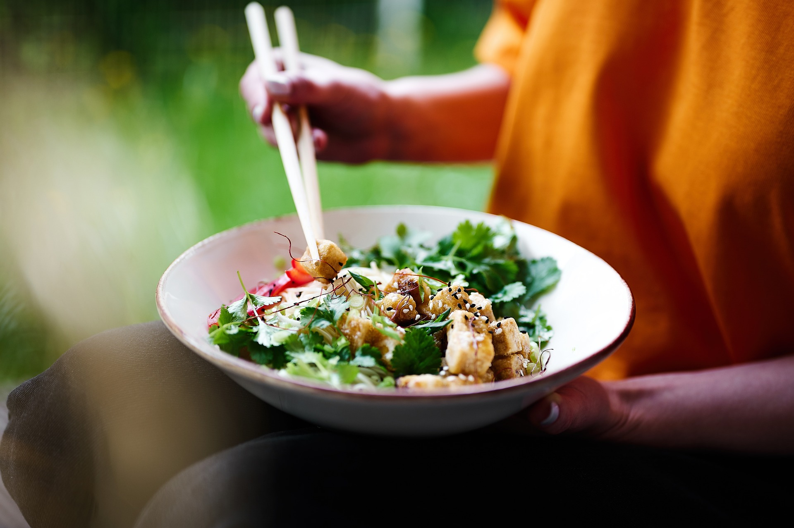

Nutrición
Nos encargamos de crear y desarrollar planes de alimentación. Te orientamos y enseñamos sobre cómo adoptar hábitos alimentarios saludables y te preparamos programas para tus necesidades concretas
4R para el post entrenamiento
Recarga con hidratos de carbono, Repara con proteínas, Rehidrata con agua y/o bebidas isotónicas dependiendo las circunstancias, Relaja descansando, durmiendo mínimo 8 horas
Nutrición Deportiva
Te guíamos para saber qué, cuándo y por qué se deben comer y beber ciertos alimentos u otros según el deporte y la actividad física que realices
Procesados y ultraprocesados
Volvé a la comida hecha en casa, moderá el consumo de los alimentos procesados y evitá el consumo de productos ultraprocesados.
Tips saludables

Conocé cómo mejorar tu calidad de vida y la de tu familia. Llevar una dieta equilibrada y sin excesos es una de las claves para tener una vida sana
¿Es mejor comer las frutas y verduras con o sin la piel?

La Organización Mundial de la Salud recomienda la ingesta de 400gr. al día ya que son fuentes ricas en vitaminas, minerales y fibra. Hay nutrientes importantes en la piel. Y, lo que es más, las cáscaras de frutas y verduras desechadas contribuyen al cambio climático.
¿Qué es hoy en día comer sano o saludable?
Según la ley, "alimentación saludable" es aquella basada en criterios de equilibrio y variedad, y de acuerdo con las pautas culturales de la población, que aporta una cantidad suficiente de nutrientes esenciales